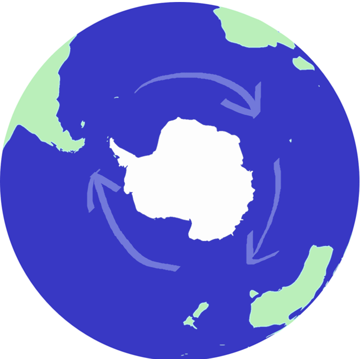
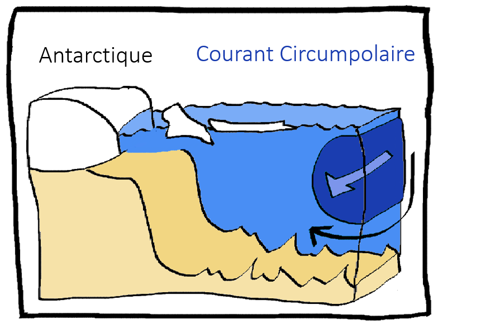
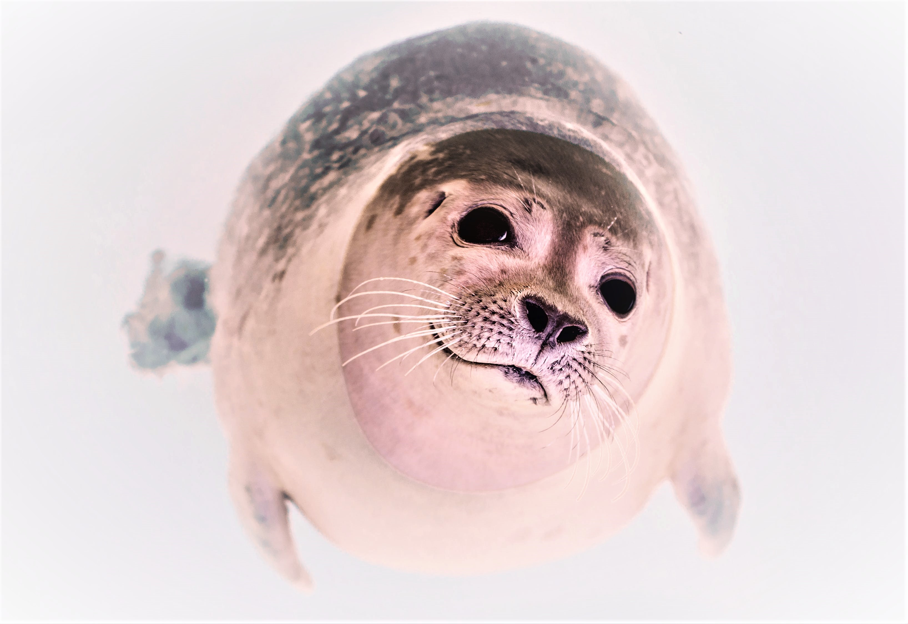
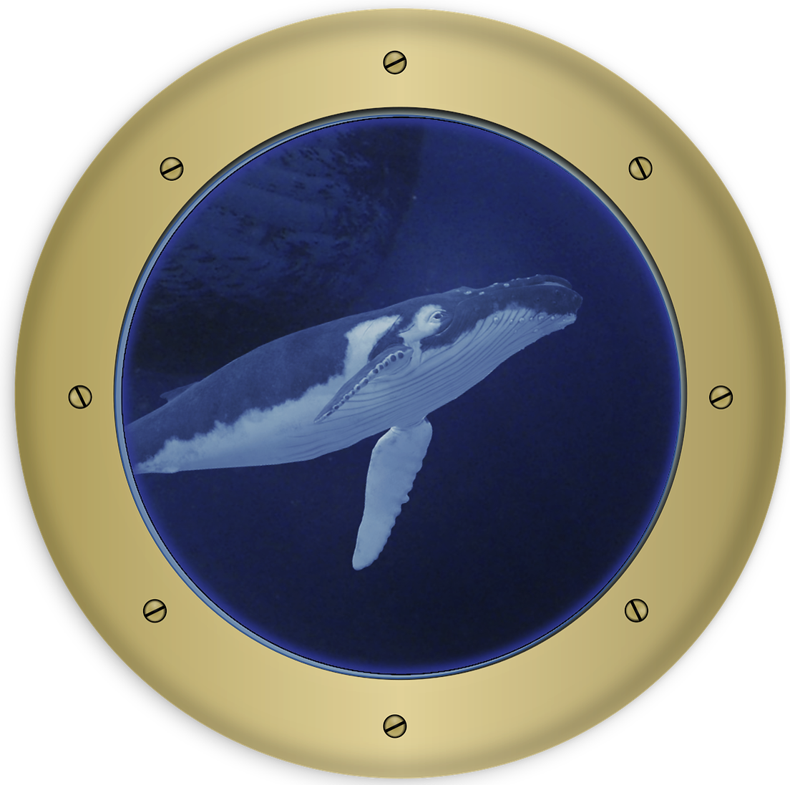

Le grand circumpolaire !

Il charrie chaque seconde 150 millions de m3 vers l’est. Sous la charge des trombes d’eau, notre vaisseau tournoie sur place telle une toupie.
Impossible de continuer vers le sud : ce courant nous bloque la route.
Il forme un barrage de 2000 km de large,
qui empêche d’ailleurs les eaux chaudes venues des Tropiques de remonter facilement vers le pôle Sud.
Grâce à lui l’Antarctique est continuellement entouré d’eaux froides : sa banquise est donc peu réchauffée par le bas,
et il en est de même des calottes polaires qui s’écoulent du continent et avancent vers la mer.
- Que fait-on, capitaine ? demande le mécanicien qui commençait à avoir le tournis. Le moteur fatigue, impossible de forcer le passage.
- Si nous avançons, nous serons emportés et il sera inutile de résister. Le courant circumpolaire est le plus puissant au monde ! Nous tournerons en boucle tout autour de l’Antarctique…
- Alors on fait demi-tour ? me suggérez-vous.
- Non. Il faut passer en dessous.
Le courant circumpolaire est large mais aussi très profond : il s’étend jusqu’à 2 à 4 km de profondeur, tout près du plancher océanique.

La perspective est ratée mais vous comprenez l'idée du schéma :
nous passons sous le courant circumpolaire !
- Attention à la bathymétrie !
Le relief sous-marin est très accidenté.
Nouvelle Bleue recule et entame sa descente dans les abysses. Nous plongeons dans le noir. Sur le tableau de bord, la température grimpe.
Nous croisons des eaux plus chaudes.
Elles viennent du Nord de l’océan Atlantique. Ces eaux circulent en profondeur car elles sont très salées, et donc très denses.
Assez denses, d’ailleurs, pour passer en dessous du courant circumpolaire et rejoindre l’Antarctique.
Nouvelle Bleue se laisse guider par les eaux profondes, évitant tant bien que mal les pics sous-marins aux arrêtes acérées.
Nous empruntons un canyon tout juste assez large pour que nous puissions y avancer sans érafler la coque de notre sous-marin.
La température descend soudain en dessous de -1.9°C.
- Incroyable... Comment de l'eau si froide peut-elle exister ?
A cette température, l'eau devrait geler ! Il est évident qu'elle ne vient pas de l'Atlantique. Mais alors d'où vient-elle ?
Nous aurions aimé remonter jusqu'à la source de cette masse d'eau glaciale, mais une ascendance nous emporte soudain vers le haut.
- Mince ! C’est à cause du relief,
l’océan est très turbulent par ici !

Nous remontons finalement vers la surface. Mais impossible d’émerger :
la mer est recouverte d’une épaisse banquise, terrain de jeu des phoques et des éléphants de mer. Le soleil perce quelques rayons bleutés à travers la glace.
Un capteur s’anime sur le tableau de bord : nous captons des ondes sonores. Vous mettez le haut-parleur et un chant nous parvient.
Une baleine à bosse ! Nous coupons le moteur pour ne pas l’effrayer.
- Là !
Le majestueux cétacé arrive droit sur Nouvelle Bleue. Un dos noir, le ventre clair et la tête parcourue de petites bosselures. Il frôle le vaisseau et son œil passe devant le hublot principal où nous nous tenons rassemblés.
Un petit baleineau le suit de près, de très près. Il vaut mieux : la région est courue d’orques…

- Vous avez vu leurs nageoires ?
Elles sont bordées d'excroissances qu'on appelle les tubercules et qui permettent à ces énormes bêtes de fendre les eaux avec agilité.
- D'habitude, les baleines ont les nageoires lisses ! Pourquoi est-ce qu'elles ont des bosses, celles-là ?
- C'est une espèce un peu différente... Les baleines à bosse sont parmi les plus lourdes de notre planète.
Au fil de l'évolution, des baleineaux aux nageoires anormalement bosselées sont nés à cause d'une mutation hasardeuse de leur ADN.
Ces petits nageaient mieux et avaient plus de chance d'échapper aux prédateurs.
Devenus grands, ils parcouraient de longue distance sans trop se fatiguer. Au final, leur chance de se reproduire et d'avoir une descendance était plus élevée ! Ils transmettaient à leurs enfants un ou plusieurs gènes responsables de la présence de ces petits tubercules sur les nageoires.
Alors, au fil du temps, l'évolution a conservé les bosses sur les nageoires de cette nouvelle espèce. C'est la sélection naturelle.
Une fois la mère et son petit à bonne distance, nous reprenons notre route et apercevons enfin une percée dans la banquise.
- Allons-y !
Une arrivée localisée de l’eau chaude venue de l’Atlantique a fondu la glace sur un kilomètre de diamètre.
Ce trou dans la glace s’appelle une polynie.
Nouvelle Bleue remonte à la surface et nous sortons les longues vues et le périscope.
- Alors… Oui, aucun doute,
nous sommes en Mer de Weddell !
Je reconnais l’immense baie qui découpe le continent Antarctique.